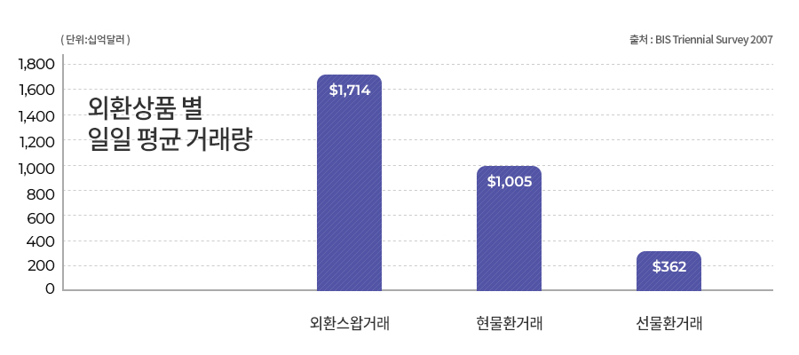

시장 현황 및 규모
외환시장은 본래 국제적으로 은행 간 거래가 주를 이루는 제한된 시장이었으나, 지금은 각국의 중앙은행, 상업 및 투자은행, 헤지펀드, 일반기업, 개인 등 다양한 주체들이 참가하고 있습니다.
국내에서는 2005년 선물거래법 시행령 개정을 기하여 개인투자자들에게도 FX시장 참여를 허용하였으며, 통신사업의 급속한 발전으로 말미암아 온라인 거래가 가능해지면서 개인투자자들은 HTS (Home Trading System)을 통해 24시간 동안 거래를 할 수 있게 되었습니다.
외환시장은 전세계에서 규모가 가장 큰 금융시장입니다. 하루 평균거래량은 무려 3.2조 달러에 육박하며, 이는 전세계 증권시장의 일일 평균거래량의 10배 이상, NYSE (뉴욕증권거래소)의 일일 평균거래량의 35배 이상, 남녀노소 막론 전세계 인구가 하루 평균 $500 가까이 거래하는 규모입니다. 동 규모 중 현물환 시장이 차지하는 비중은 1/3 수준입니다.
FX시장에서의 주요 시장으로는 런던, 미국, 도쿄가 있으며, 이 중 미국과 영국이 전체 거래량의 50% 이상을 차지하고 있습니다. 따라서, 미국과 영국 시장이 겹치는 오후 10시부터 익일 오전 2시 (한국시간 기준)까지 거래가 가장 활발합니다. 특히, 미국 달러의 경우 전체 외환거래의 80% 이상에 관여하고 있으며, 이는 일 2.7조 달러에 상당하는 규모입니다.
| 지역 별 일일 평균 거래량 | 통화 별 일일 평균 거래량 | 통화 쌍 별 일일 평균 거래량 | |||
|---|---|---|---|---|---|
| 국가 | 점유율 | 통화 | 점유율 | 통화조합 | 점유율 |
| 영국 | 34.1% | USD | 86.3% | EUR/USD | 27% |
| 미국 | 16.6% | EUR | 37.0% | USD/JPY | 13% |
| 스위스 | 6.1% | JPY | 16.5% | GBP/USD | 12% |
| 일본 | 6.0% | GBP | 15.0% | AUD/USD | 6% |
| 싱가포르 | 5.8% | CHF | 6.8% | AUD/CAD | 4% |
| 홍콩 | 4.4% | AUD | 6.7% | EUR/JPY | 2% |
| 호주 | 4.3% | CAD | 4.2% | EUR/GBP | 2% |
| 프랑스 | 3.0% | SEK | 2.8% | EUR/CHF | 2% |
| 독일 | 2.5% | HKD | 2.2% | 기타 | 27% |
| 덴마크 | 2.2% | NOK | 2.2% | - | - |
| 기타 | 15.0% | NZD | 1.9% | - | - |
| - | - | 기타 | 17.8% | - | - |
| 합계 | 100% | 합계 | 100% | 합계 | 100% |
거래 별 두 종류의 통화가 관여되기 때문에 개별 통화의 백분율 합계는 200%임
※ 출처: BIS Triennial Survey 2007